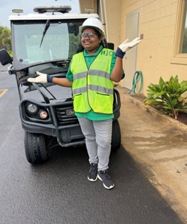
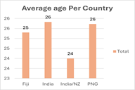
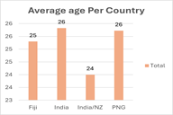

Safety Assistant — BYU–Hawaii
July 2022 - Present
- Fire life safety compliance, inspections, emergency drills.
- Supported OSHA implementation and trainings.
- Managed budgets and team coordination.
B.S. Accounting & Supply Chain Management — BYU-Hawaii
Bachelor's in Accounting & Supply Chain Management (BYU–Hawaii). Experienced in Safety & Risk Management, project coordination, and office leadership.
Hello! I am Nagarathnam Challapilli, currently studying at BYU–Hawaii, pursuing a Bachelor’s in Accounting and Supply Chain Management. I have 4+ years of experience in Safety and Risk Management, specializing in fire life safety, OSHA compliance, emergency preparedness, and office management.
I also served 18 months in India New Delhi Mission for The Church of Jesus Christ of Latter-day Saints, holding leadership roles such as Trainer and Sister Training Leader, which taught me honesty, integrity, accountability, humility, responsibility, and hard work.
July 2022 - Present
2017 - 2022
Problem: Many employees were unaware of their safety responsibilities, relying only on supervisors.
Action: Delivered a Safety & Health Responsibilities PowerPoint covering OSHA duties, PPE, hazard recognition, chemical handling, and emergency response. Encouraged discussion and scenario practice.
Result: Increased awareness, proactive hazard reporting, improved PPE compliance, and stronger safety culture.
Problem: Inventory records inconsistent; 22% mismatch between system and physical items.
Action: Counted 300+ items, identified obsolete items, reorganized shelves, standardized data entry, created visual reports.
Result: Accuracy improved from 78% → 95%, shelving space reduced 15–18%, faster stock search, better operational flow.
Problem: Limited data on how international students remit money home.
Action: Surveyed 75+ students, analyzed data, created visual charts for comparison.
Result: Identified contributions by country: India 36%, India/NZ 8%, Fiji 27%, PNG 29%. Provided clear insights into remittance behaviors.
 

"Naga is dependable, hardworking, and always willing to step in to help. A great team player." — Classmate
"Shows initiative, learns fast, and communicates clearly. A strong problem-solver." — Instructor Feedback
"Professional, respectful, and committed to safe workplace culture. Pleasure to work with." — Colleague
"I have really enjoyed working with Naga on our recent group project. She is not only intelligent but also deeply analytical, she thoughtfully evaluates situations and offers meaningful opinions. She consistently contributes to the team and remains fully committed to achieving our group’s goals.